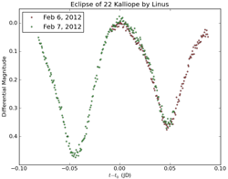

Asteroids
The OSCAAR code can be used for more than just exoplanet research. Brett Morris also used it to study asteroids with satellites. He used it to study the binary asteroid Kalliope and its satellite Linus in February 2011. He was able to measure the decrease in brightness in the system as Linus passed over Kalliope. The results were featured in a presentation at Asteroids Comets and Meteors in Japan in 2012.
